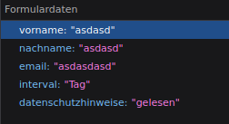

Status= 301 (Moved Permanently): Das angefragte Objekt wurde permanent verschoben, dabei steht die neue URL im "Location" Header
Version= HTTP/1.1: beschreibt welche HTTP Version genutzt wird
Übertragen= 18,49kB (131,00 kB Größe)= Wie viele Daten bei der Anfrage übertragen wurden
Anfrage Priorität= Highest
DNS-Auslösung= System
Seite wurde nicht gefunden (404 not found). Es wird HTTP Version 1.1 genutzt, es wurden 129B übertragen. Die Referrer Policy ist "strict-origin-when-cross-origin". Die Anfrage-Priorität ist "Highest" und die DNS-Auflösung ist "System"
Übertragen wurden die Formulardaten:
